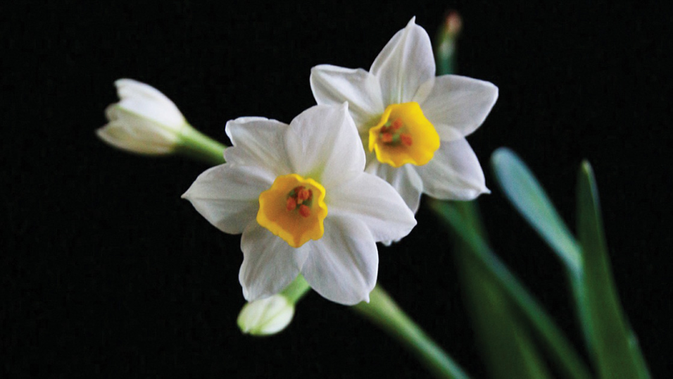

• Narcisse •
retourLe narcisse est une fleur emblématique de la fin de l’hiver, appréciée pour sa jolie floraison. Il offre un véritable spectacle en pleine terre dans les massifs, devant des arbustes ou en tâches dans le gazon. Il peut aussi être planté en pot ou utilisé en fleur à couper.
Echo | Pas de prix
